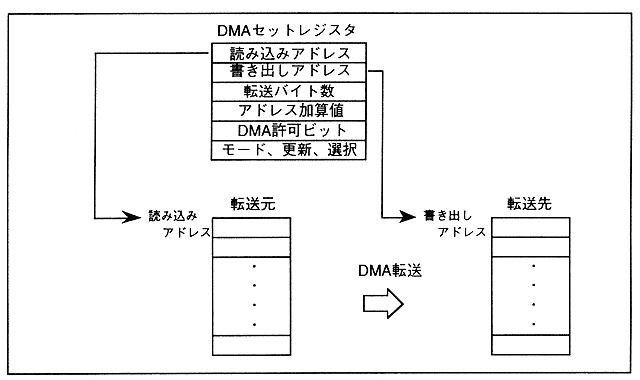

The byte indicated by the number of bytes transferred from the memory at the address indicated by the read address register to the memory indicated by the write address register by directly using the address value of the DMA set register for each level. The number of data transfers is executed. Performs once in one start and ends DMA. Figure 2.4 shows details of DMA transfer operation in direct mode.
Figure 2.4 Direct mode DMA transfer operation details
